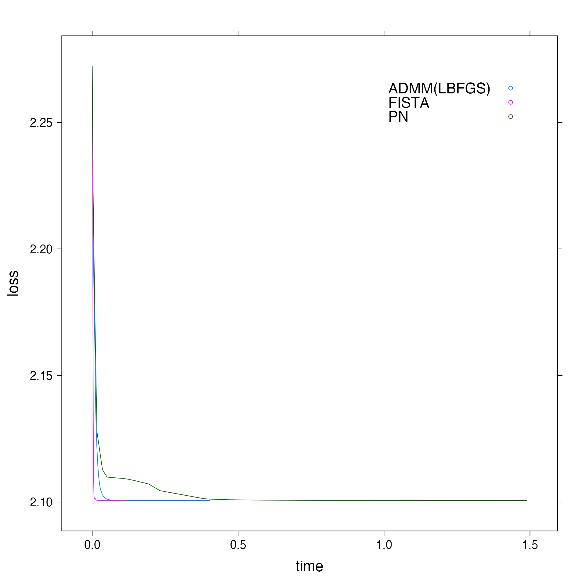

compare-fista-admm-pn.RmdThis tutorial shows how to compare perfomance of FISTA, ADMM and Proximal Newton. We will use ‘heart’ dataset for the demonstration.
Let’s load the data..
First step is generating fits for each of the algorithms. Note that diagnostics=TRUE flag is necessary so that solver records the metrics at each iteration.
# Obtaining the fit for the solvers we want to compare fista_fit <- FISTA(x, y, family="binomial", alpha=(0.01),diagnostics=TRUE) admm_fit <- ADMM(x, y, family="binomial", alpha=(0.01),diagnostics=TRUE) pn_fit <- PN(x, y, family="binomial", alpha=(0.01),diagnostics=TRUE)
We haven’t specified optimization algorithm choice in ADMM so default (L-BFGS) will be used.
To compare total execution time, we can use total_time attribute of the fit.
# Comparing total execution time print(fista_fit$total_time) #> [1] 0.3436372 print(admm_fit$total_time) #> [1] 0.9014282 print(pn_fit$total_time) #> [1] 12.00022
Now, these fits cannot be directly used to plot as they contain a lot of parameter so we’ll call a utility function that merges the relevant parameter and returns a dataframe.
Finally, now we can generate the loss vs time plot.
# Plotting objective vs time plt <- xyplot(loss ~ time, group = solver, data = f, auto.key = list(corner = c(0.9, 0.9)), type = "l") update(plt, par.settings = list(fontsize = list(text = 18)))
